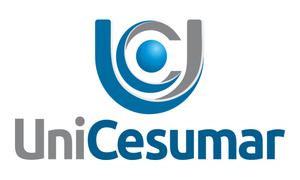
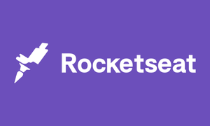
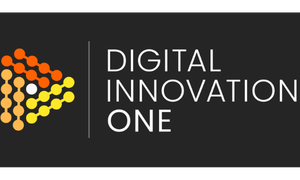
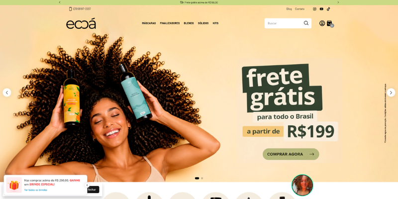
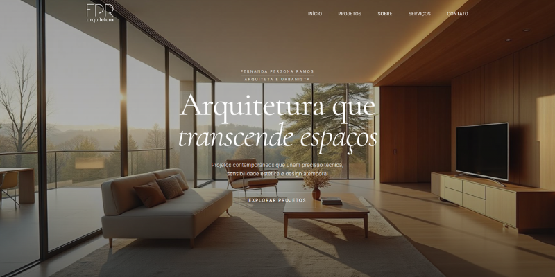
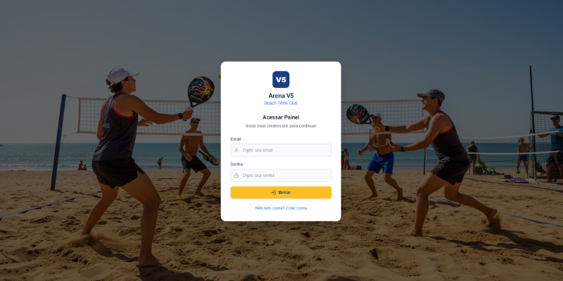
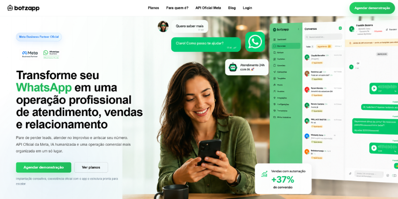

Portfólio acadêmico • Desenvolvimento Web
Crio experiências digitais com visual forte, código limpo e foco em resultado.
Sou Gustavo Costenaro, estudante de Análise e Desenvolvimento de Sistemas. Este portfólio reúne minha base técnica, meus projetos e a direção profissional que estou construindo.
Sobre mim
Tecnologia, criatividade e vontade de construir projetos que resolvem problemas reais.

Atuo no mercado há dois anos como desenvolvedor web na Vow Digital e também trabalho como freelancer para outras empresas do país, desenvolvendo soluções sob medida para diferentes necessidades.
Minhas principais habilidades são desenvolvimento de e-commerce, landing pages, agentes de IA, automações e sistemas personalizados, sempre com foco em resultado, organização e boa experiência de uso.
Formação
Base acadêmica e estudos contínuos para crescer na área de tecnologia.

Graduação
Análise e Desenvolvimento de Sistemas
Formação pela Unicesumar com foco em lógica, banco de dados, engenharia de software e desenvolvimento web.

Curso
Programação Full Stack
Formação voltada para desenvolvimento full stack, com aplicações modernas, integrações e boas práticas.

Cursos
DIO
Estudos em front-end, lógica de programação com JavaScript, agentes de IA e automações com n8n.
Tecnologias
Ferramentas que fazem parte da minha rotina de estudo e desenvolvimento.
HTML5
CSS3
JavaScript
TypeScript
React
Node.js
Git
GitHub
Tailwind CSS
Experiência
Projetos e serviços que reforçam minha atuação prática no desenvolvimento web.
Desenvolvedor Front-end
Criação de interfaces responsivas, landing pages, páginas comerciais e sites institucionais com foco em clareza visual.
Freelancer em Desenvolvimento Web
Projetos personalizados para negócios e clientes que precisam de presença digital, vitrine online e soluções sob medida.
Projetos
Alguns exemplos de trabalhos que representam meu estilo e minha evolução.

Projeto
E-commerce
Loja virtual com foco em conversão, experiência de compra fluida e estrutura preparada para escalar.

Projeto
Landing Page
Página pensada para campanhas, captação de leads e apresentação clara de serviços ou produtos.

Projeto
Sistema
Sistema personalizado para organizar processos, automatizar tarefas e atender necessidades específicas do cliente.

Projeto
Botzapp + API Meta Oficial
Solução de atendimento e automação via WhatsApp com integração estruturada para operações comerciais.
Contato
Vamos conversar sobre oportunidades, projetos e novas conexões profissionais.
Este espaço pode ser usado para contato acadêmico, networking e futuras propostas de trabalho.
E-mail: gustavoprogweb97@gmail.com
Telefone: 44999830226